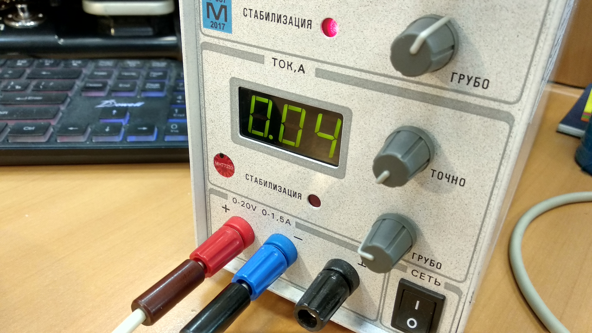
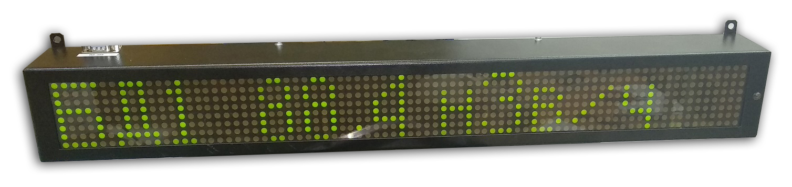
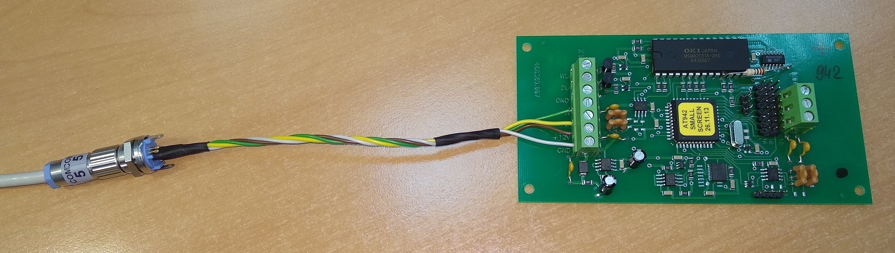
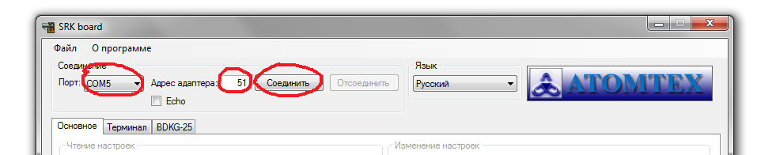

942-й адаптер интерфейсный
Есть две версии 942-го адаптера — AИ-AT942 и AИ-AT942А, для подключения маленького и большого табло, соответственно есть две прошивки:
- Для маленького табло (AИ-AT942) — __Board485o.hex (23.07.2019)
- Для большого табло (AИ-AT942А) — __Board485b.hex (01.04.2013)
Чтобы прошить, надо:
- Отключить питание
- Вставить перемычку
- Подключить спец кабель к BLS контактам на плате адаптера, а сам кабель подключить к компу через адаптер-USB
{kind=link}
Подключать удобнее сразу и питание, и обмен — так не придется по сто раз
переподключать кабель
- Подключить питание
- Прошивать Flip'ом
- После окончания процесса прошивки достать перемычку
- Чтобы отключить режим программирования, отключить/включить питание
Далее следует настроить адаптер
Что если адаптер не подключается при прошивке
Если адаптер не подключается при прошивке, а питание при этом подавалось от обычного 12В адаптера, можно попробовать подать питание не от адаптера, а от блока питания с амперметром (ну или подключить амперметр в разрыв адаптера).


При подключении следить за током, если равен 40, всё ОК, если больше — адаптер НЕ БУДЕТ прошиваться. Можно попробовать отключить питание и достать-вставить перемычку (почистить контакты под перемычкой)
Для работы с маленьким табло
- Подключить 942-й адаптер через USB-COM адаптер
- Или так: 
- Запустить программу SRK-Board
- Для подключения к адаптеру выбрать порт, адрес (всегда 51), нажать соединить 
- Выбрать язык, адрес подключенного БД, выставить временные интервалы для отображения окон табло
- Для настройки отображения подключаемого БД нажать "Настройка вывода табло" ⇒ "Изменить"
- Выбрать к какому табло (адрес табло настраивается на самом табло переключателями) будет подключен БД [1], какой адрес будет у этого БД [2], и в каких единицах будут выводиться показания [3]
- В системе подключение кабелей к плате выглядит так:
- На самом табло настроить адрес:
- В положении "ON" означает выключено, адрес вводится первыми 5-ю рычажками в двоичном виде (00001 значит 1-й, 00010 2-й, 00011 3-й и т.д.), 6-7-8 всегда выключены (сервисные настройки)


Если в системе (подсистеме) СРК с маленьким табло используется несколько БД, то
зашить их все для разных адресов, чтобы пользователь переключателем на табло мог сам выбрать, какой БД
должен отображаться